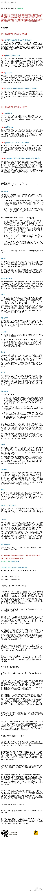
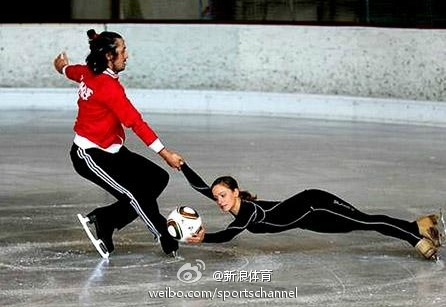

看来五四运动得再来一次了，二次启蒙。 //@尹鸿:从「少年中国」到「弟子归」，价值观真是倒行逆施。还记得当年一句吾爱师吾更爱真理的热血么？@开谈啦:广州中大再开国内大学先气，新生入学被要求读《弟子规》。有媒体认为这将有助于当下大学生的德行教育，有学者则反对，称此举拾文化之糟粕，有违基本的大学精神，是“洗脑”行径。开风气之先举抑或拾糟粕之败举？你怎么看？网页链接 开谈啦微信：kaitanla 
伊尔汗！！！@新浪体育:【前土耳其球星伊尔汗将争冬奥花滑门票】网页链接近日国际滑联公布了索契冬奥花滑落选赛名单，双人滑中一对土耳其组合备受瞩目——贝斯坦迪戈娃/伊尔汗。伊尔汗！就是02年世界杯上夹球过卡洛斯的伊尔汗，就是助土耳其夺世界杯季军的伊尔汗！08年伊尔汗接触到了花滑，进步神速。 